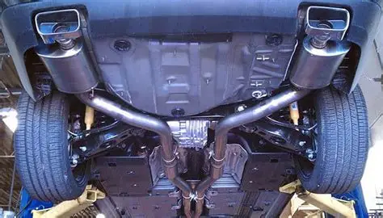

- OXIDACIÓN DEL TUBO: Perforaciones y fugas de gases. - CATALIZADOR OBSTRUIDO: Reduce potencia y aumenta consumo. - SENSOR DE OXÍGENO DEFECTUOSO: Mezcla rica o pobre que daña motor. - SILENCIADOR PERFORADO: Ruidos fuertes y posibles multas. - JUNTAS O ABRAZADERAS FLOJAS: Vibraciones y fugas de gases. - SOPORTES ROTOS: El tubo golpea la carrocería. - RESONADOR DAÑADO: Zumbidos u hormigueo en cabina.
